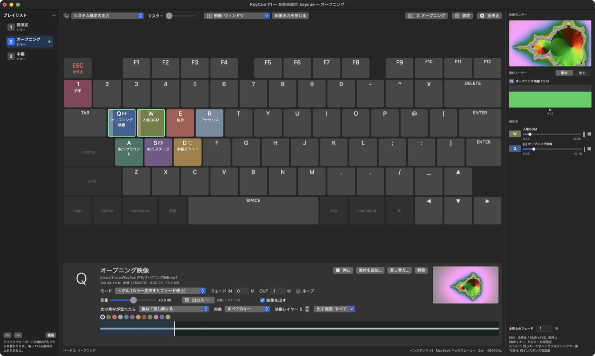

キーを押すだけで、音と映像とスライドを。
キーボードの各キーに音声・動画・画像・Keynote / PowerPoint のスライドを割り当てて、本番ではキーを押すだけ。ライブ、イベント、礼拝、舞台のための Mac 用キュー再生アプリです。
ダウンロード v{{VERSION}} · {{SIZE}}
押せば鳴る。もう一度押せばフェードして止まる。別のキーは重ねて鳴る。
ファイルをキーにドロップするだけ。音声・動画・画像・pptx / key / pdf に対応。US・JIS 配列を自動で判別します。
素材の ch をインターフェースのどの出力から出すかを表で指定。8ch のファイルも、4 本のモノラルトラックを持つ mov もそのまま。
動画の音も同じルーティングで。pptx は PowerPoint、key は Keynote で画像と動画に展開し、押すたびに次のスライドへ。ディゾルブや黒を経由するフェードなど、切り替え効果も素材ごとに。
ウィンドウと、つないだディスプレイの全画面に同時に。キーごとに出す画面を絞ることもできます。
キーボードの「ページ」を並べて、クリックや ⌘→ で素材を丸ごと入れ替え。鳴っている音は止まりません。
キーを押すたびに次の素材へ。並び替え、素材ごとの音量や自動送りも設定できます。
素材の ch ごとのレベル、出力 8ch のメーター、テストトーン。再生中の素材はシークバーで位置を変えられます。
次の素材が流れたら重ねる／フェードして止める／すぐ止める。グループ分けや映像の重なり順も。
Web カメラ、HDMI などのキャプチャ機器、マイクやオーディオインターフェースの入力も、キーひとつで出し入れ。
キーボードの図のほかに、素材をサムネイルで並べるグリッド表示と、映像の重なり順ごとに段に並べるレイヤー表示も。クリックでもキーと同じに再生できます。
ProPresenter のようなルーティング表で、素材のチャンネルと出力をつなぎます。

3 ステップで本番の準備ができます。
| ESC | すべてフェードして停止（Shift+ESC で即停止） |
| Shift+キー | そのキーを即停止 |
| ⌘→ / ⌘← | プレイリストの次・前のページ |
| キーをダブルクリック | スライドや複数素材の一覧を開く |
KeyCue {{VERSION}}（{{DATE}}）
KeyCue-{{VERSION}}.dmg をダウンロード {{SIZE}}KeyCue for Windows {{WIN_VERSION}}（{{WIN_DATE}}）— Mac 版と同じ機能で、キーマップ（.keycue）もそのまま開けます
Windows（x64）版をダウンロード {{WIN_X64_SIZE}} Windows（ARM64）版 {{WIN_ARM64_SIZE}}%LOCALAPPDATA%\KeyCue\error.log を添えてお知らせください。